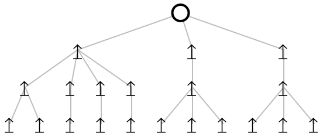

Multinomial Reduction
We want to take a multinomial such as (xy+1)*(xy+1), and reduce it to 1 + 2xy + x^2y^2. Notice that the result is in the order you might expect – constants before powers, increasing powers, etc.
1 Polynomials as Labeled Ordered Trees
For simplicity we will start with polynomials and work up to multinomials. Our first thought may be to implement them as labeled ordered trees. For example, we could have xy+1 represented as the tree
or in racket (+ (* "x" "y") 1). The issue is that this tree is equivalent to all of the following trees:
This duplication stems from commutativity of addition and multiplication. If we had picked binary trees, we would additionally suffer from duplication due to associativity of addition and multiplication.
In choosing a representation that is not isomorphic to the original structure, we will be forced to add extra boilerplate that increases our code’s complexity, in both senses of the word.
2 Polynomials as Unlabeled Unordered Trees
We want to remove labels from the trees. But in order to do so we need to adopt a convention for the meanings of items at different depths. Let’s first consider some example polynomials:
Well technically these trees are still labeled, but it is in a more uniform way. At the top level of the tree, ↥ acts like 1 and ↧ acts like -1, and repetition acts like addition.
At the lower level of the tree, ↥ acts like the variable x and ↧ acts like x^{-1}, and repetition acts like multiplication. Internally, we can represent these unordered trees as multisets. Here are the same trees in the same order, written as multisets.
(define-singleton-type ⃒) (define-wrapper-type ↥) (define-wrapper-type ↧)
(define two (multiset (↥ ⃒) (↥ ⃒))) (define neg-two (multiset (↧ ⃒) (↧ ⃒))) (multiset (↧ ⃒) (↥ ⃒) (↥ ⃒) (↥ ⃒) (↥ ⃒) (↧ ⃒)) (multiset (↥ two) (↥ two) (↥ two)) (multiset (↧ two) (↧ two) (↧ two)) (multiset (↥ neg-two) (↥ neg-two) (↥ neg-two))
Before moving on to multisets, let’s implement addition and multiplication. Addition is just gluing trees together.
2 + 3 \rightarrow 5
3x^2 + 3x^2 \rightarrow 6x^2

(define (add . msets) (fold multiset-add-all empty-multiset msets))
Multiplication will be a bit more complicated. Remember the top level of the trees represents addition and the lower level represents multiplication. So we should expect all pairs of top level arrows to interact, and the lower level arrows should add. Here are some examples:
3x^2 * 2 \rightarrow 6x^2
3x^2 * x \rightarrow 3x^3
(define (mult . msets) (define (mult-aux level x y) (match (cons x y) [(cons a b) #:when (⃒? b) a] [(cons a b) #:when (⃒? a) b] [(cons (↥ a) (↥ b)) (↥ (mult-aux level a b))] [(cons (↧ a) (↥ b)) (↧ (mult-aux level a b))] [(cons (↥ a) (↧ b)) (↧ (mult-aux level a b))] [(cons (↧ a) (↧ b)) (↥ (mult-aux level a b))] [(cons (? multiset? m1) (? multiset? m2)) (if (eq? 0 level) (for*/multiset ([a m1] [b m2]) (mult-aux 1 a b)) (add m1 m2))])) (fold (curry mult-aux 0) ⃒ msets))
Ok, this is all fine, but I thought this article was supposed to about multinomial reduction. What if I told you that if we represent multinomials in the right way, then we have already implemented multinomial reduction? Sparse multinomial reduction, at that?
3 Sparse Multinomials as Unlabeled Unordered Trees
In each level we represent one kind of object in unary. At the top level we represent coefficients in unary. Then we represent exponents in unary. For multinomials, we will want to create trees that are one level deeper. What is it that we can now represent in unary that is necessary to specify a term in a multinomial?
We would rather have numbers in our tree than have variables or strings anyway, so let’s have n represent the nth variable, denoted x_n.
Let’s look at an example.
x_2x_1^3+2x_3

The shape of the tree corresponds to x_2x_1^3 + x_3 + x_3, from left to right. Remember that the top level is addition – there are as many top level branches as the sum of multinomial coefficients (3). The next level corresponds to exponents – we see groupings of size 1, 3, 1, and 1, corresponding to the powers of x_2^1, x_1^3, x_3^1, and x_3^1, respectively. At the bottom layer, we have identification of variable names. One child means x_1, two means x_2, and three means x_3.
x_2x_0^3+2x_3
Zero children at the last level corresponds to our 0th variable, or x_0.
Now let’s show our original example, translated to use variable indices: xy+1 \approx x_0x_1+1
(x_0x_1+1)+(x_0x_1+1) \rightarrow 2x_0x_1+2
(x_0x_1+1)*(x_0x_1+1) \rightarrow x_0^2x_1^2+2x_0x_1+1
The top level consists of coefficients which need to be multiplied, and the next level consists of exponents which needs to be added. What changes about variable indices during multiplication? Absolutely nothing. This is why the pre-existing multiplication operation will work out of the box.
Not including imports, we have implemented a sparse multinomial reduction engine in 18 lines of code!
4 Acknowledgements
All material to do with representation of integers and polynomials comes from Norman Wildberger. My contribution is an implementation and extension to the multinomial case.
(require (except-in srfi/1 span)) (require racket/match) (require (only-in racket/function curry)) (require rebellion/collection/list) (require rebellion/collection/multiset) (require rebellion/collection/hash) (require rebellion/streaming/transducer) (require rebellion/type/wrapper) (require rebellion/type/enum) (require rebellion/base/option) (require rebellion/type/singleton)
(provide ⃒ ↥ ↧ add mult)